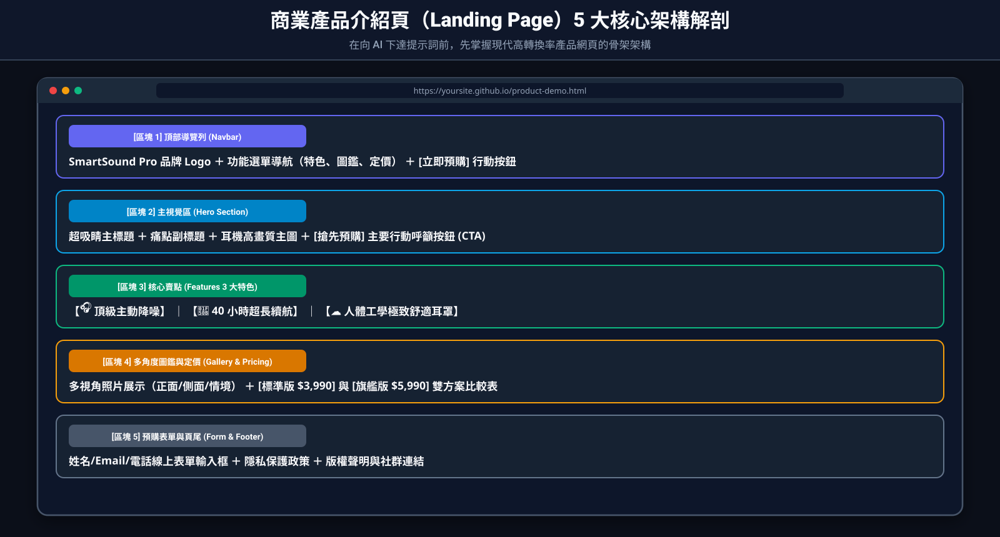
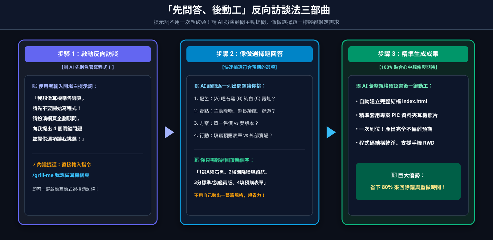
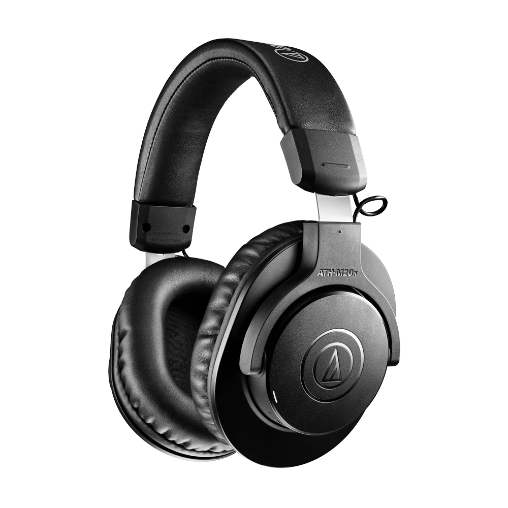
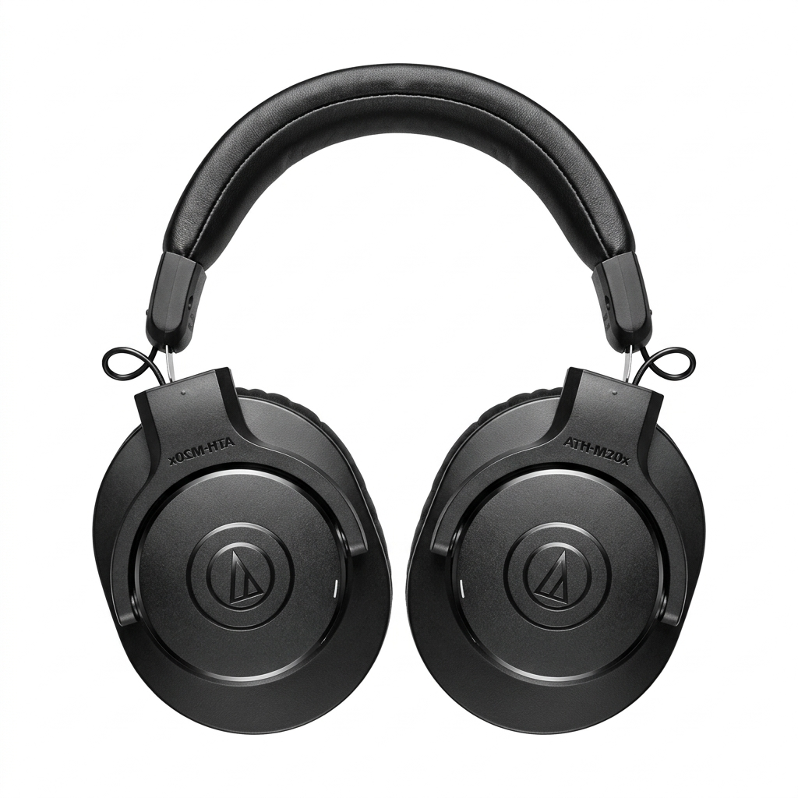
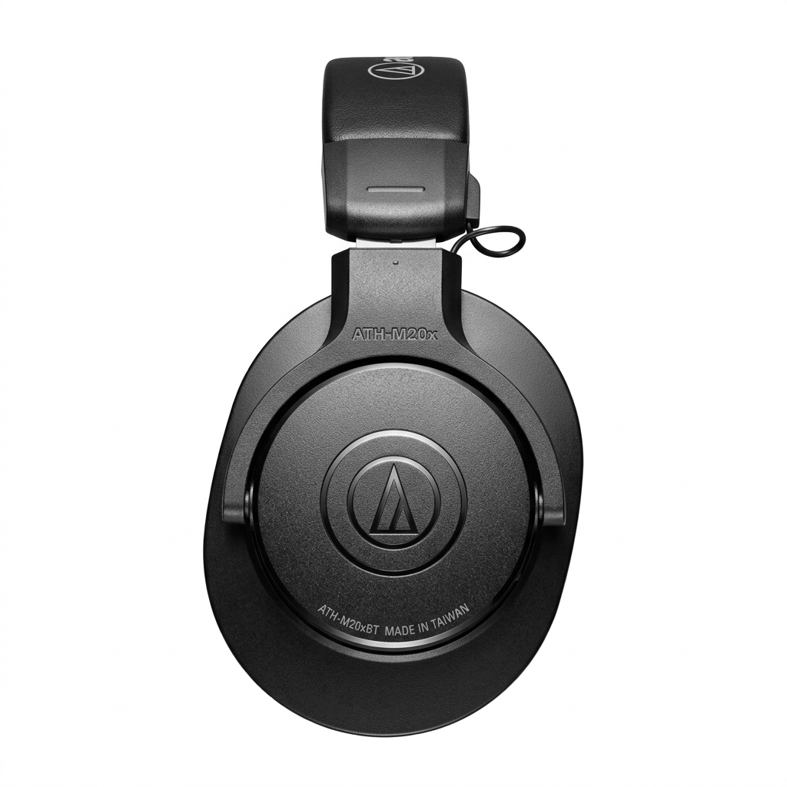
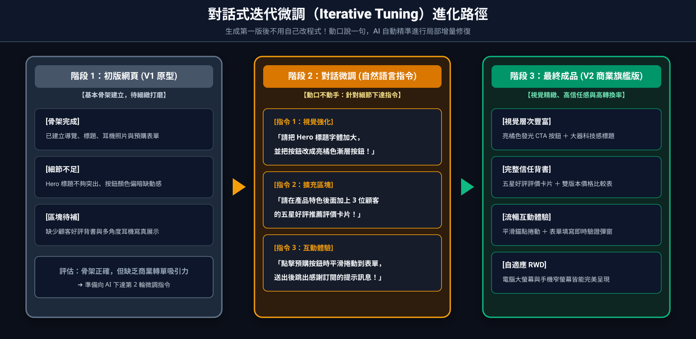

利用 Antigravity 製作一個產品介紹網頁
不用寫程式也能當網頁設計師！本章將學習如何透過「提示詞工程」與超實用的「問答式需求訪談法」，讓 AI 一步步引導你釐清想法，打造出零落差、響應式（RWD）的商業產品展示頁面。
2-1 產品頁面構想與結構規劃
一個標準且吸引人的現代商業產品介紹頁（Landing Page）通常具備以下 5 大核心區塊：
- ① 頂部導覽列（Header / Nav）： 品牌 Logo、功能錨點連結、右上角突出的「立即預購」行動按鈕。
- ② 英雄看板區（Hero Section）： 搶眼的標語、產品副標題、吸睛高畫質主圖與主要 CTA（Call to Action）按鈕。
- ③ 產品核心亮點（Features）： 3~4 個特色卡片，圖文並茂解說賣點（深度降噪、長續航、配戴舒適）。
- ④ 方案售價表（Pricing）： 清楚列出不同版本方案價格與權益比較（標準版 vs 旗艦版）。
- ⑤ 預購表單與頁尾（Footer）： 收集客戶姓名、Email、電話資料，並留下版權與社群連結。

在下達提示詞前，先理解現代高轉換率產品頁面的黃金結構，向 AI 描述時更有條理！
2-2 提示詞架構與「問答式需求訪談法」：不用一次想破頭！
向 Antigravity 提問時，如果只說一句「幫我做一個網站」，AI 只能自己瞎猜，做出來的畫面往往跟你想的差十萬八千里。一份完整的提示詞通常包含：角色設定 + 任務內容 + 風格規範 + 必備區塊。
💡 初學者最強大絕招：不會寫長篇提示詞？叫 AI「反過來問你問題」！
一般人剛開始做網站時，腦中通常只有一個模糊的想法（例如：「我想賣一款降噪耳機」），很難在第一時間就把配色、區塊、定價、按鈕功能全部想齊全。
這時候千萬不要硬著頭皮自己憋出一大篇提示詞！最聰明的技巧是採用「反向訪談法（先問答、後動工）」——也就是請 Antigravity 先不要寫程式，先扮演企劃顧問向你提問，你只需要像做選擇題一樣回答它的問題，讓 AI 幫你把提示詞補完！

透過「請 AI 先提問 ➔ 你回答選項 ➔ AI 彙整規格後動工」，做出的網頁能 100% 貼合你的期待！
請你先不要開始寫程式！請先扮演資深網頁企劃顧問，針對這個網站的「視覺風格、主打賣點、價格方案、圖片配置與行動呼籲按鈕」，一次向我提出 4～5 個關鍵問題（每個問題請提供建議選項讓我挑選）。等我回答完、我們確認好完整規格後，你再開始幫我寫網頁！"
🗣️ 一問一答實戰模擬：看看這樣對話有多輕鬆！
「沒問題！在開始製作網頁前，請先幫我確認以下 4 個問題（直接回覆編號即可）：
1. 視覺風格：喜歡 (A) 曜石黑科技感 (B) 純白極簡風 (C) 潮流霓虹風？
2. 核心賣點：最想強調哪 3 個特色？（例如：主動降噪、超長續航、配戴舒適、低延遲）
3. 價格方案：單一售價還是分版本？（例如：標準版 vs 旗艦版）
4. 客戶行動：點擊購買按鈕後，希望 (A) 填寫線上預購表單 (B) 跳轉外部賣場？」
「1. 選 A 曜石黑科技感。 2. 強調主動降噪、40小時續航、人體工學耳罩。 3. 分為標準版 $3,990 與旗艦版 $5,990。 4. 選 A 填寫預購表單，並請幫我用 PIC 資料夾裡面的耳機照片！」
AI 會把你的回答自動組合成一份專業的網站規格書。你確認無誤後說一聲「好，照這樣開始做！」，產出的網頁就不會跟你的想像有任何落差！
/grill-me 斜線指令！在新版 Antigravity 2.0 的正中央對話框中，你也可以直接輸入
/grill-me 我想做一個耳機銷售網頁。這個內建指令會啟動「互動式訪談模式」，直接在畫面上彈出可點選的選擇題視窗，一站式幫你把需求問清楚！
2-3 讓 Antigravity 同步「生成圖片」與「打造網頁」
現代商品頁面最不可或缺的就是質感商品圖！Antigravity 不僅能寫程式，還能依據你現有的單張照片，利用多模態影像生成技術，為你延伸製作「多視角（正面、側面、情境擺設）」的商業宣傳圖片！
📸 本單元現有多維度商品素材展示（已自動為你生成）
我們以原始耳機照片 PIC/ATHM20XBT_m01.jpg 為基礎，讓 AI 拓展出了不同視角的展示圖：



現在，讓我們在向 Antigravity 提問的提示詞中，將「照片導入與多視角圖片搭配」一併寫入：
【素材與圖片配置要求】：
請使用專案 PIC 資料夾中的多維度商品照片：
- 英雄區（Hero）主圖：請放置
PIC/ATHM20XBT_m01.jpg 或 PIC/headphone_lifestyle.jpg。- 特色或外觀相簿區：請使用圖片卡片或輪播展示
PIC/headphone_front.jpg（人體工學對稱耳罩）與 PIC/headphone_side.jpg（金屬霧黑側蓋質感細節）。【網頁架構要求】：
1. 建立單一檔案 index.html，具備現代科技感深色風格與精緻微動態效果。
2. 包含頂部導覽列、Hero 橫幅區、產品 3 大特點（主動降噪、40小時續航、人體工學）、多角度產品圖鑑展示、價格方案表（標準版 $3,990 / 旗艦版 $5,990）與預購按鈕。
3. 確保所有圖片具備自適應縮放，在手機版與電腦螢幕皆能完美呈現（RWD 響應式）。"
送出後，Antigravity 會自動將這四張圖片嵌入網頁的相應版位，並編排成專業電商等級的展示版面！
2-4 迭代與微調技巧：動口不動手，越改越完美
生成第一版網頁之後，如果想調整細節，完全不需要自己進程式碼大海撈針！只要繼續在對話框中吩咐 Antigravity：

看哪裡不順眼就吩咐一句，AI 會精準進行局部增量修改，不破壞原有排版！
常見的對話微調示範：
- 「請把 Hero 標題的字體放大一點，並把預購按鈕改成亮橘色漸層。」
- 「請在產品特色卡片後面加上顧客五星好評推薦（Testimonials）區塊。」
- 「點擊預購按鈕時，請平滑捲動到表單區，送出後彈出感謝訂閱的提示視窗。」
Antigravity 會自動進行增量修改，這就是與 AI 結伴開發（Pair Programming）的最佳流程！請確保這個網頁運作順暢，因為第 4 章我們就要把它發布到全世界！